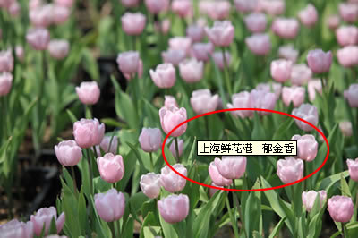

HTML <img> 标签的 alt 属性
实例
<img src="/i/eg_tulip.jpg" alt="上海鲜花港 - 郁金香" />
如果无法显示图像，浏览器将显示替代文本，就像这样：
此外，当用户把鼠标移到图像上方，最新的浏览器会在一个文本框中显示描述性文本。下面的代码在 alt 属性中为图像添加了描述性文本：
您可以把鼠标移动到下面的照片上，看看相应的效果：

红圈中的文本框是用户把鼠标移动到图像上时，IE7 浏览器所显示的效果：
定义和用法
alt 属性是一个必需的属性，它规定在图像无法显示时的替代文本。
假设由于下列原因用户无法查看图像，alt 属性可以为图像提供替代的信息：
- 网速太慢
- src 属性中的错误
- 浏览器禁用图像
- 用户使用的是屏幕阅读器
<img> 标签的 alt 属性指定了替代文本，用于在图像无法显示或者用户禁用图像显示时，代替图像显示在浏览器中的内容。
我们强烈推荐您在文档的每个图像中都使用这个属性。这样即使图像无法显示，用户还是可以看到关于丢失了什么东西的一些信息。而且对于残疾人来说，alt 属性通常是他们了解图像内容的唯一方式。
提示和注释：
注释：alt 属性的值是一个最多可以包含 1024 个字符的字符串，其中包括空格和标点。这个字符串必须包含在引号中。这段 alt 文本中可以包含对特殊字符的实体引用，但它不允许包含其他类别的标记，尤其是不允许有任何样式标签。
注释：当用户把鼠标移动到 img 元素上时，Internet Explorer 会显示出 alt 属性的值。这种行为并不正确。所有其他的浏览器正在向规范靠拢，只要当图像无法显示时，才会显示出替代文本。
提示：如果需要为图像创建工具提示，请使用 title 属性。
语法
<a alt="value">
属性值
| 值 | 描述 |
|---|---|
| text |
规定图像的替代文本 alt 文本的使用原则：
|
TIY 实例
- <img> 标签的 alt 属性
- 本例演示如何为图片显示替换文本。在浏览器无法载入图像时，替换文本属性告诉读者他们失去的信息。为页面上的图像都加上替换文本属性是个好习惯。